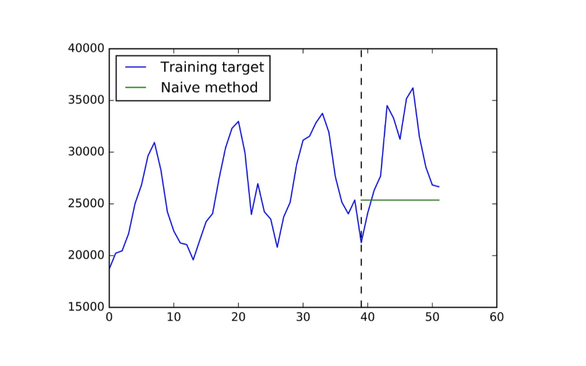
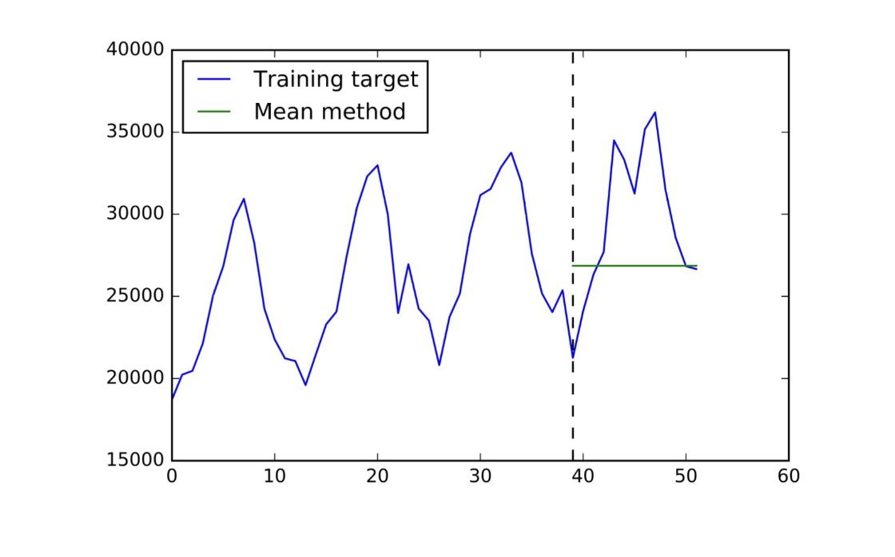
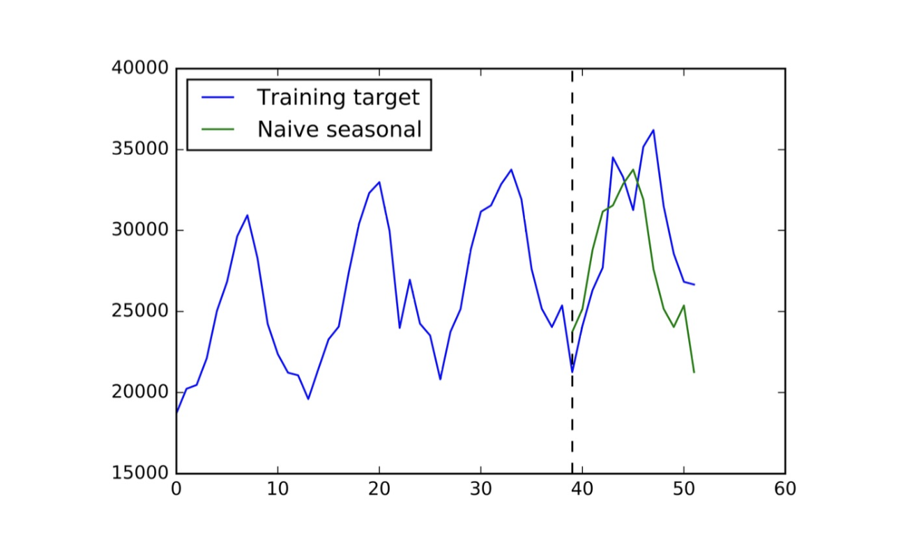
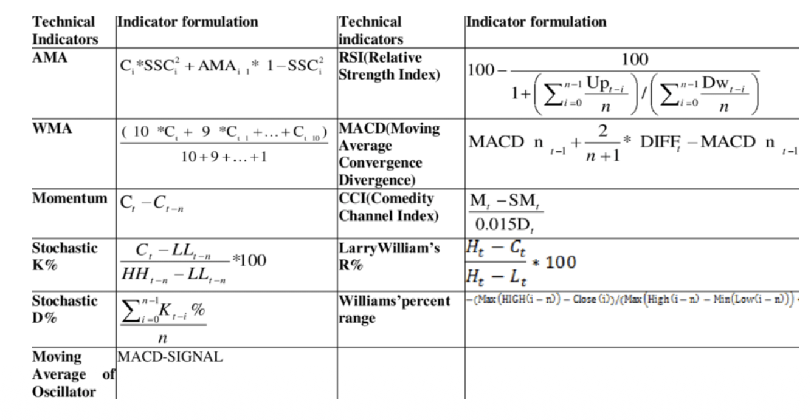
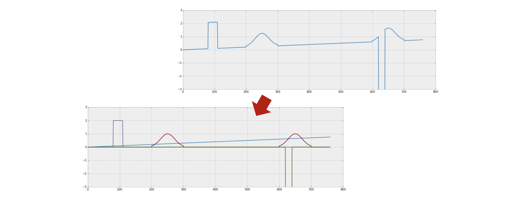

1. 시계열 예측 (Time Series Forecasting)
시계열이란 무엇인가?
시계열(time series)은 시간 순서를 가진 순차적 데이터(sequential data)를 폭넓게 지칭합니다. 다음 조건 중 어떤 것에 해당하더라도 시계열로 볼 수 있습니다.
- 고정/가변 길이: 길이가 고정되어 있어도, 가변적이어도 모두 시계열
- 명시적 타임스탬프 유무: 시간 정보가 명시되지 않은 순서 데이터도 포함
- 단변량/다변량: 단일 변수(주가)부터 다수의 변수(센서 데이터 묶음)까지
- 등간격/비등간격 관측: 관측 간격이 일정하지 않아도 시계열
즉, 순서 정보가 의미를 갖는 데이터라면 모두 시계열의 범주에 들어옵니다. 주식 가격, 기상 데이터, 전력 소비량, ECG(심전도), 웹 트래픽 로그 등이 대표적인 예입니다.

시계열 분석의 문제 유형
시계열 분석(time series analysis)은 크게 시계열 수준(series-level) 문제와 타임스탬프 수준(timestamp-level) 문제로 나뉩니다.
시계열 수준 문제 (Series-level Problems)
전체 시계열을 하나의 단위로 보고 레이블을 예측하거나 구조를 파악합니다.
- 시계열 분류 (Time Series Classification): 전체 시계열을 보고 하나의 레이블을 출력합니다.
- 예: ECG 데이터 → “정상/비정상” 판별
- 시계열 이상 탐지 (Time Series Anomaly Detection): 시계열 전체에서 이상(anomaly)이 발생했는지를 감지합니다.
- 예: ECG 데이터 → “특정 구간에 문제가 있는가?”
- 시계열 클러스터링 (Time Series Clustering): 여러 시계열을 유사도 기준으로 군집화합니다.
- 예: ECG 데이터 → 유사한 패턴을 가진 환자 그룹 식별

타임스탬프 수준 문제 (Timestamp-level Problems)
각 시점(timestep)별로 레이블이나 예측값을 산출합니다.
- 시계열 예측 (Time Series Forecasting): 과거 관측값을 바탕으로 미래 시점의 값을 예측합니다.
- 예: 주가 시계열 → 향후 N일간의 가격 예측
- 이상 이벤트 탐지 (Abnormal Event Detection): 각 시점이 이상한지를 판별합니다.
- 예: 주가 시계열 → 의심스러운 매매 시점 탐지

왜 시계열 예측인가?
이 강의에서는 시계열 예측(time series forecasting)에 집중합니다. 그 이유는 다음과 같습니다.
- 실용적 응용이 매우 넓습니다. 수요 예측, 재고 관리, 에너지 계획, 금융, 기상 예보 등 거의 모든 산업 분야에서 예측이 필요합니다.
- 시계열의 본질적 특성에 대한 깊은 이해를 요구합니다. 트렌드, 계절성, 노이즈, 자기상관 등 다양한 구조를 이해해야 좋은 모델을 만들 수 있습니다.
- 예측 모델의 품질이 다른 문제(분류, 이상 탐지 등)에도 전이됩니다. 좋은 예측 모델은 잠재 표현을 잘 학습하므로, 다른 시계열 문제에도 활용 가능합니다.

예측 문제 정식 설정 (Forecasting Problem Setup)
수학적 표기를 정의해 봅시다.
- \(i \in I\): 예측 대상 변수 인덱스
- \(T\): 현재 시점(타임스탬프)
- \(z_{i,t}\): 변수 \(i\)의 시점 \(t\)에서의 관측값
목표: 과거 관측값 \(z_{i,0}, z_{i,1}, \cdots, z_{i,T-1}, z_{i,T}\)가 주어졌을 때, 미래 \(h\)개 스텝의 결합 분포(joint distribution)를 추정합니다.
\[ z_{i,0}, \cdots, z_{i,T-1}, z_{i,T} \implies P(z_{i,T+1}, z_{i,T+2}, \cdots, z_{i,T+h}) \]
여기서 \(h\)를 예측 지평(forecast horizon)이라 부릅니다. 단순히 미래 값 하나를 맞추는 것이 아니라, 불확실성을 포함한 분포를 추정하는 것이 이상적인 목표입니다.

핵심 고려사항 1 — 시퀀스 예측 (Predicting a Sequence)
목표는 미래 \(h\)개 스텝의 예측값 \(\hat{z}_{i,T+1}, \hat{z}_{i,T+2}, \cdots, \hat{z}_{i,T+h}\)를 동시에 구하는 것입니다. 이를 위한 두 가지 접근이 있습니다.
접근법 1: 자기회귀(Autoregressive) 방식
- 단일 스텝만 예측하는 모델 \(f\)를 학습합니다. 즉, \(\hat{z}_{i,t+1} = f(z_{i,1:t})\).
- 이를 \(h\)번 반복 적용합니다: \(\hat{z}_{i,T+1}\)로 \(\hat{z}_{i,T+2}\)를 만들고, 그 결과로 \(\hat{z}_{i,T+3}\)을 만드는 식입니다.
- 장점: 모델 구조가 단순합니다.
- 단점: 초기 오차가 누적되어 먼 미래일수록 예측 품질이 저하됩니다(error accumulation).
접근법 2: 시퀀스 전체를 한 번에 예측하는 방식
- 인코더(encoder) \(g\)로 과거 시계열을 압축하고, 디코더(decoder) \(f\)로 미래 시퀀스를 통째로 출력합니다.
- Seq2Seq, Transformer 기반 모델들이 이 방식에 해당합니다(이후 강의에서 다룸).
핵심 고려사항 2 — 추가 속성 (Additional Attributes)
실제 예측 문제에서는 시계열 자체 외에도 각 시점 \(t\)에 부가적인 공변량(covariate) \(\mathbf{x}_{i,t}\)가 주어지는 경우가 많습니다.
- 예시: 요일(day of the week), 공휴일 여부, 환율, 주가 지수 등
- 이 공변량은 예측 대상 시점에도 주어질 수도, 주어지지 않을 수도 있습니다.
공변량을 활용하면 더 풍부한 맥락에서 예측이 가능하지만, 우선은 단순화를 위해 이 추가 속성은 무시하고 시계열 값만을 입력으로 사용하는 설정에서 출발합니다.

핵심 고려사항 3 — 예측의 불확실성 (Uncertainty of Predictions)
시계열 예측의 궁극적 목적은 단순히 미래 값을 하나 찍는 것이 아닙니다. 우리가 예측을 하는 이유는 예측을 바탕으로 최적의 행동(decision)을 결정하기 위해서입니다.
예를 들어 최적 행동 \(a^*\)는 다음과 같이 정의됩니다.
\[ a^* = \underset{a}{\arg\min} \; \mathbb{E}_{z \sim P} \left[ \text{cost}(a, \, z_{i,T+1}, \cdots, z_{i,T+h}) \right] \]
이 최적화를 위해서는 단일 점 예측(point forecast)이 아니라 미래 행동의 분포 \(P\)를 추정하는 것이 이상적입니다. 100% 정확한 예측은 불가능하므로, 불확실성을 분포로 표현하는 확률적 예측(probabilistic forecasting)이 더 나은 의사결정을 가능하게 합니다.
뉴스벤더 모델 (The Newsvendor Model)
확률적 예측이 왜 중요한지를 보여주는 고전적인 예제입니다.
문제 설정
- \(c\): 신문 구매 단가(purchase price)
- \(q\): 구매 수량 — 최적화해야 하는 변수(decision variable)
- \(s\): 판매 단가(sales price)
- \(d\): 실제 수요(actual demand)
이익 함수는 다음과 같습니다.
\[ \text{profit}(q) = s \cdot \min(d, q) - cq \]
\(\min(d, q)\)는 실제로 팔린 수량입니다. 수요보다 많이 사면 남은 신문은 손실이 되고, 적게 사면 잠재 수익을 놓치게 됩니다.
Solution 1: 점 예측 (Point Forecast)의 한계
- 예측 모델 \(f\)로 수요의 점 예측 \(\hat{d} = f(x)\)를 구하고, \(q = \hat{d}\)로 설정합니다.
- 문제: 점 예측 \(\hat{d}\) 하나만으로는 최적 의사결정이 어렵습니다.
- 과소 주문 (\(\hat{d} < d\)): 단위당 \((s - c)\)의 기회 손실이 발생합니다.
- 과다 주문 (\(\hat{d} > d\)): 남은 수량만큼 단위당 \(c\)의 비용 손실이 발생합니다.
- 두 종류의 비용이 비대칭이기 때문에, 단순히 기댓값을 구매 수량으로 설정하는 것은 최적이 아닐 수 있습니다.
Solution 2: 확률적 예측 (Probabilistic Forecast)의 활용
- 예측 모델 \(g\)로 수요의 분포 \(P = g(x)\)를 추정합니다.
- 분포 \(P\)를 바탕으로 최적 \(q^*\)를 결정합니다.
최적 조건(optimality condition):
이익의 기댓값 \(\mathbb{E}[\text{profit}(q)]\)를 \(q\)에 대해 미분하면, 최적 구매 수량 \(q^*\)는 다음 조건을 만족해야 합니다.
\[ P(d \leq q^*) = \frac{s - c}{c} \]
이를 누적분포함수(CDF) \(F\)로 표현하면,
\[ q^* = F^{-1}\!\left(\frac{s - c}{c}\right) \]
즉, 수요 분포의 특정 분위수(quantile)를 구매 수량으로 설정하는 것이 최적입니다. 판매 마진이 클수록 더 높은 분위수를, 낮을수록 더 낮은 분위수를 선택해야 합니다.

2. 선형 회귀 (Linear Regression)
파라미터 없는 기준 모델들 (Parameter-Free Methods)
모델 개발에 앞서, 아무 파라미터도 학습하지 않는 기준 모델(baseline)들을 이해하는 것이 중요합니다. 이 모델들을 이기지 못하는 모델은 실용적 가치가 없습니다.
Naïve 방법 (Naïve Method)
가장 단순한 예측: 마지막 관측값을 그대로 반복합니다.
\[ \hat{z}_{T+t} = z_T, \qquad \forall t = 1, 2, \cdots, h \]
- 직관: 시계열이 매우 잡음이 심하고 예측 불가한 경우(예: 금융 자산), 마지막 값이 최선의 추정일 수 있습니다.
- 한계: 트렌드나 계절성을 전혀 반영하지 못합니다.

평균 방법 (Mean Method)
최근 \(w\)개 관측값의 평균을 예측값으로 사용합니다.
\[ \hat{z}_{T+t} = \frac{1}{w}\bigl(z_{T-w+1} + z_{T-w+2} + \cdots + z_T\bigr), \qquad \forall t = 1, 2, \cdots, h \]
- \(w\)는 윈도우 크기(window size)로, 하이퍼파라미터입니다.
- \(w = T\)(전체 길이)로 설정하면 전체 평균을 사용하는 것과 같습니다.
- 노이즈를 평균내어 완화하지만, 트렌드나 최근 변화에 반응이 느립니다.

Naïve 계절성 방법 (Naïve Seasonal Method)
직전 시즌의 동일 시점 값을 예측값으로 사용합니다.
- 예: 기온 예측 시 “전년도 같은 달의 기온”을 사용
- 계절성의 주기(seasonal period)를 올바르게 설정하는 것이 핵심입니다.
- 강한 계절성을 가진 데이터에서는 Naïve나 Mean 방법보다 훨씬 나은 성능을 보입니다.

파라미터 없는 모델의 역할
파라미터 없는 모델들은 중요한 기준선(baseline)입니다.
- 개발한 모델이 이 기준선보다 못하다면, 두 가지 원인 중 하나를 의심해야 합니다.
- 데이터 자체가 예측 불가능할 정도로 잡음이 심한 경우 (예: 주가). 어떤 모델도 의미 있게 이기기 어렵습니다.
- 모델 개발 과정에서 문제가 있는 경우:
- 잘못된 전처리
- 잘못된 아키텍처 선택
- 학습 실패(학습률, 수렴 문제 등)
선형 회귀 모델 (Linear Regression)
선형 회귀(LR)는 파라미터 없는 방법들을 일반화합니다. 피처(feature)를 잘 설계하면, 위의 기준 모델들을 모두 선형 회귀의 특수한 경우로 볼 수 있습니다.
모델 정의
\(n\)개의 피처로 이루어진 입력 벡터 \(\mathbf{x}_i \in \mathbb{R}^n\)이 주어질 때, 선형 함수 \(f\)를 다음과 같이 정의합니다.
\[ f(\mathbf{x}_i; \theta) = \sum_{j=1}^{n} w_j x_{i,j} + b \]
- \(\theta = (\mathbf{w}, b)\): 학습 가능한 파라미터(가중치와 편향)
- 파라미터는 예측 RMSE(Root Mean Squared Error)를 최소화하도록 최적화됩니다.
피처 설계 (How to Choose Features)
선형 모델에서 피처 설계(feature engineering)의 품질이 성능을 결정합니다. 어떤 피처를 사용할 수 있는지 살펴봅시다.
주요 피처 유형
| 피처 유형 | 설명 | 예시 |
|---|---|---|
| 외부 피처 | 시계열에 포함되지 않은 외부 정보 | 요일, 공휴일 여부, 환율 |
| 지연(Lag) 값 | 과거 관측값들 | \(z_{t-1}, z_{t-2}, z_{t-7}, z_{t-14}\) |
| 트렌드 피처 | 연속된 값들의 차이 | \(z_{t-1} - z_{t-2}\), \(z_{t-3} - z_{t-4}\) |
| 계절성 지연값 | 계절 주기만큼 전의 값 | \(z_{t-S}\) (\(S\)는 계절 주기) |
| 이동 평균 피처 | 특정 구간의 평균 | \(\text{mean}(z_{t-w:t-1})\) |
피처 설계의 어려움
좋은 피처를 선택하는 것은 쉽지 않습니다.
- 도메인 지식이 필수적입니다. 예를 들어 주식 가격 예측에는 RSI, MACD, Stochastic 등 수십 가지의 기술적 지표(technical indicators)가 활용됩니다.
- 경험과 실험을 통해 어떤 피처 조합이 유효한지를 검증해야 합니다.

피처를 활용한 시계열 분해 (Decomposition)
좋은 피처가 갖추어지면, 시계열을 트렌드(trend), 계절성(seasonality), 잔차(residual) 등 여러 성분으로 분해할 수 있습니다. 이 분해는 모델이 각 성분을 독립적으로 포착하도록 돕습니다.

3. ARIMA
ARIMA란?
ARIMA(AutoRegressive Integrated Moving Average)는 특정 방식의 피처 엔지니어링이 적용된 선형 모델로 이해할 수 있습니다.
ARIMA\((p, d, q)\)는 세 가지 성분으로 구성됩니다.
| 기호 | 성분 | 역할 |
|---|---|---|
| \(p\) | AR: Autoregressive | 자기회귀 항 |
| \(d\) | I: Integrated | 시계열 차분(differencing) |
| \(q\) | MA: Moving Average | 이동 평균 오차 항 |
AR(p): 자기회귀 모델 (Autoregressive Model)
자기회귀(AR) 모델은 과거 \(p\)개의 관측값을 피처로 사용합니다.
\[ f(z_{t-p+1:t}; \theta) = \sum_{j=0}^{p-1} \phi_j \, z_{t-j} + b \]
- AR\((p)\)에서는 \(p\)개의 과거 관측값 \(z_{t-1}, z_{t-2}, \cdots, z_{t-p}\)가 입력 피처입니다.
- \(p\)를 AR 차수(order)라 하며, 얼마나 먼 과거를 참조하는지를 결정합니다.
백색 잡음 항 (White Noise)
일부 모델에서는 AR 함수에 백색 잡음(white noise) \(\epsilon \sim \mathcal{N}(0, 1)\)을 추가합니다.
\[ f(z_{t-p+1:t}; \theta) = \sum_{j=0}^{p-1} \phi_j \, z_{t-j} + b + \epsilon \]
- 이 잡음 항은 예측의 불가피한 오차를 모델링합니다. 어떤 모델도 완벽할 수 없으며, 외부 요인이 항상 존재하기 때문입니다.
- 확률적 예측(probabilistic forecasting)에서 미래 불확실성을 분포로 표현하는 핵심 요소가 됩니다(잠시 후 SSM 섹션에서 더 다룹니다).
- 현재 단계에서는 단순화를 위해 이 잡음을 무시해도 무방합니다.
I(d): 차분 항 (Differencing Term)
차분의 동기
일반적인 예측은 미래 값 \(z_{T+1}\)을 직접 예측합니다. 그런데 \(z_T\)를 이미 알고 있으므로, 다음 두 예측은 수학적으로 동치입니다.
- \(z_{T+1}\)을 예측하는 것
- \(z'_{T+1} = z_{T+1} - z_T\)를 예측하는 것 (정보 손실 없음)
차분된 시계열 \(z'\)을 예측하는 것이 원래 시계열을 직접 예측하는 것보다 쉬울 수 있습니다. 그 이유는, 차분을 통해 시계열의 비정상성(non-stationarity)을 제거하고, 스케일의 변화가 아닌 변화량(movement)을 일정하게 만들기 때문입니다.
차분의 정의
1차 차분 (\(d = 1\)): \[ z'_t = z_t - z_{t-1} \]
2차 차분 (\(d = 2\)): 1차 차분의 차분 \[ z''_t = z'_t - z'_{t-1} = (z_t - z_{t-1}) - (z_{t-1} - z_{t-2}) = z_t - 2z_{t-1} + z_{t-2} \]
주의: 차분의 순서가 중요합니다. ARIMA\((p, d, q)\)를 적용할 때, 먼저 \(d\)번 차분하여 새 시계열 \(z^{(d)}\)를 만든 후, 이 새 시계열에 AR\((p)\)와 MA\((q)\)를 적용합니다.
예시: ARIMA(1, 1, 0)
- \(d = 1\): 원래 시계열 \(z\)를 1차 차분하여 \(z'_t = z_t - z_{t-1}\)을 생성합니다. (\(z'\)의 길이는 \(z\)보다 1 짧아집니다.)
- \(p = 1\), \(q = 0\): \(z'\)에 AR(1)을 적용합니다.
최종 모델:
\[ \hat{z}'_t = \phi \cdot z'_{t-1} + b \]
즉, 차분된 시계열에서의 다음 스텝 변화량을 이전 변화량으로 선형 예측하는 것입니다.
MA(q): 이동 평균 항 (Moving Average Term)
MA\((q)\)는 과거의 예측 오차(prediction error) 항들을 피처로 추가합니다.
- \(\epsilon_{t-k} = z_{t-k} - \hat{z}_{t-k}\): 시점 \(t-k\)에서의 예측 오차
- MA\((q)\)는 \(\epsilon_{t-1}, \epsilon_{t-2}, \cdots, \epsilon_{t-q}\)를 피처로 사용합니다.
예를 들어 MA(2)의 모델식은 다음과 같습니다.
\[ \hat{z}_t = \theta_1 \epsilon_{t-1} + \theta_2 \epsilon_{t-2} + b \]
핵심 특징: MA 항은 자기회귀 예측을 반복하면서 이전 예측의 오차를 다음 예측에 반영합니다. 즉 모델이 체계적인 오류를 자기보정(self-correct)할 수 있게 합니다.
ARIMA: 종합 정리
ARIMA\((p, d, q)\)는 세 아이디어를 결합한 선형 모델입니다.
예시: ARIMA(2, 1, 2)
- 차분(I): \(d = 1\)이므로 시계열을 1회 차분 → \(z'_t = z_t - z_{t-1}\)
- AR 피처: \(z'_{t-1}\), \(z'_{t-2}\)
- MA 피처: \(\epsilon_{t-1}\), \(\epsilon_{t-2}\) (차분된 시계열 \(z'\) 기준)
- 이 피처들을 사용하여 선형 회귀 모델을 학습
중요: AR과 MA의 피처는 원래 시계열 \(z\)가 아닌 차분된 시계열 \(z'\)에서 계산됩니다.
4. 상태 공간 모델 (State Space Models)
오차 수정 함수 (Error-Correction Functions)
선형 회귀의 대안으로, 예측을 이전 예측을 점진적으로 수정하는 방식으로 만들 수 있습니다.
\[ \hat{z}_{t+1} = \underbrace{\hat{z}_t}_{\text{previous forecast}} + \alpha \underbrace{(z_t - \hat{z}_t)}_{\text{error in previous forecast}} \]
- \(\hat{z}_t\): 이전 시점의 예측값
- \(z_t - \hat{z}_t\): 이전 예측의 오차
- \(\alpha\): 평활 파라미터(smoothing parameter), 일반적으로 \(0 < \alpha < 1\)
\(\alpha\)가 클수록 최근 오차를 빠르게 반영하여 예측을 수정하고, 작을수록 변화에 보수적으로 반응합니다. 이 방식을 오차 수정 함수(error-correction function)라 부릅니다.
단순 지수 평활 (Simple Exponential Smoothing, ETS)
오차 수정 함수를 반복 전개하면 지수 평활(ETS) 형태가 드러납니다.
전개 과정
\(\hat{z}_3\)을 예시로 전개해 봅시다.
\[ \begin{aligned} \hat{z}_3 &= \hat{z}_2 + \alpha(z_2 - \hat{z}_2) \\ &= \alpha z_2 + (1 - \alpha)\hat{z}_2 \\ &= \alpha z_2 + (1 - \alpha)\bigl[\hat{z}_1 + \alpha(z_1 - \hat{z}_1)\bigr] \\ &= \alpha z_2 + \alpha(1-\alpha) z_1 + (1-\alpha)^2 \hat{z}_1 \end{aligned} \]
이를 일반화하면:
\[ \hat{z}_{T+h} = \alpha z_T + \alpha(1-\alpha)z_{T-1} + \alpha(1-\alpha)^2 z_{T-2} + \cdots + (1-\alpha)^T \hat{z}_1 \]
이것이 바로 단순 지수 평활(ETS: Exponential Smoothing)입니다.
해석
- 각 과거 관측값의 가중치가 \((1-\alpha)^k\)의 지수 함수적으로 감소합니다.
- 즉, 최근 관측값일수록 더 큰 가중치를 받습니다.
- \(\alpha\)가 크면 → 최근 값에 집중 (빠른 반응, 높은 분산)
- \(\alpha\)가 작으면 → 먼 과거까지 고르게 참조 (느린 반응, 낮은 분산)

상태(State)와 예측(Prediction) 분리
ETS를 상태(state)와 예측(prediction)의 두 가지 연산으로 분리하면 더 일반적인 프레임워크로 확장할 수 있습니다.
- \(l_t\): 시점 \(t\)에서의 상태 벡터(state)
- 예측 방정식(Forecast equation): 상태를 이용해 예측값을 생성 \[ \hat{z}_t = l_{t-1} \]
- 오차 수정 방정식(Error Correction): 실제 관측값으로 상태를 업데이트 \[ l_t = l_{t-1} + \alpha(z_t - \hat{z}_t) \]
이를 도식화하면 다음과 같습니다.

이 구조에서 상태 \(l_t\)는 과거 시계열로부터 추출된 요약 정보(sufficient statistic)로, 미래를 예측하기 위한 모든 관련 정보를 담고 있습니다.
일반화된 지수 평활 (General Exponential Smoothing)
ETS에서 스칼라였던 상태를 벡터 \(\mathbf{l}_t \in \mathbb{R}^d\)로 확장합니다.
\[ \text{Forecast equation:} \quad \hat{z}_t = \mathbf{a}_t^T \mathbf{l}_{t-1} \]
\[ \text{Error Correction:} \quad \mathbf{l}_t = \mathbf{F}_t \mathbf{l}_{t-1} + \mathbf{g}_t(z_t - \hat{z}_t) \]
학습 가능한 파라미터는 4종류입니다.
| 파라미터 | 차원 | 역할 |
|---|---|---|
| \(\mathbf{a}_t \in \mathbb{R}^d\) | \(d\) | \(\mathbf{l}_{t-1}\)을 예측값 \(\hat{z}_t\)로 변환하는 선형 투영 벡터 |
| \(\mathbf{F}_t \in \mathbb{R}^{d \times d}\) | \(d \times d\) | \(\mathbf{l}_{t-1}\)을 \(\mathbf{l}_t\)로 전이시키는 상태 전이 행렬 |
| \(\mathbf{g}_t \in \mathbb{R}^d\) | \(d\) | 오차 \((z_t - \hat{z}_t)\)를 상태 업데이트에 반영하는 게인 벡터 |
| \(\mathbf{l}_0 \in \mathbb{R}^d\) | \(d\) | 초기 상태 벡터 |
스칼라 ETS는 \(d = 1\)로 설정한 특수한 경우에 해당합니다.
상태 공간 모델 (State Space Model, SSM)
오차 수정 항의 재해석
일반화된 ETS에서 오차 수정 항 \(z_t - \hat{z}_t\)를 굳이 명시적으로 넣어야 할까요?
대신 이 오차 자체를 랜덤 변수 \(\epsilon_t\)로 모델링하면 어떨까요?
\[ \text{Measurements (관측 방정식):} \quad z_t = \mathbf{a}_t^T \mathbf{l}_{t-1} + \epsilon_t, \qquad \epsilon_t \sim \mathcal{N}(0, \sigma^2) \]
\[ \text{State transition (상태 전이 방정식):} \quad \mathbf{l}_t = \mathbf{F}_t \mathbf{l}_{t-1} + \mathbf{g}_t \epsilon_t, \qquad \mathbf{l}_0 \sim \mathcal{N}(\boldsymbol{\mu}_0, \text{diag}(\boldsymbol{\sigma}_0^2)) \]
이것이 바로 상태 공간 모델(State Space Model, SSM)입니다.
ETS와의 차이
| 구분 | 일반화된 ETS | SSM |
|---|---|---|
| 오차 처리 | 관측 오차를 명시적으로 수정 | 오차를 가우시안 랜덤 변수로 모델링 |
| 초기 상태 | 결정론적 파라미터 \(\mathbf{l}_0\) | 랜덤 변수 \(\mathbf{l}_0 \sim \mathcal{N}(\boldsymbol{\mu}_0, \text{diag}(\boldsymbol{\sigma}_0^2))\) |
| 예측 결과 | 점 예측 | 확률적 분포 (자연스럽게) |
SSM의 핵심 강점은 확률적 프레임워크를 통해 예측 불확실성을 자연스럽게 정량화한다는 점입니다.
선형 상태 공간 모델 (Linear State Space Models)
SSM과 피처 기반 선형 회귀를 결합하면 더 강력한 모델을 만들 수 있습니다.
\[ \text{SSM 파트:} \quad u_t = \mathbf{a}_t^T \mathbf{l}_{t-1} \]
\[ \text{피처 기반 파트:} \quad b_t = \mathbf{w}^T \mathbf{x}_t \]
\[ \text{확률적 관측 모델:} \quad z_t \sim P(z_t \mid u_t + b_t) \]
- \(u_t\): 상태로부터 추출된 시간 의존적(time-dependent) 구성 요소
- \(b_t\): 공변량 \(\mathbf{x}_t\)로부터 추출된 피처 기반 구성 요소
- 두 항을 합산하여 관측 분포를 결정합니다.
이 모델은 더 많은 파라미터를 가지지만, SSM의 비선형 상태 역학과 선형 회귀의 풍부한 피처 표현을 동시에 활용할 수 있습니다.

강의 요약 (Summary)
이번 강의에서 다룬 내용을 핵심만 정리합니다.
| 섹션 | 핵심 내용 |
|---|---|
| 시계열 예측 | 과거 관측값으로 미래 분포 \(P(z_{T+1}, \cdots, z_{T+h})\)를 추정하는 문제. 불확실성을 고려한 확률적 예측이 점 예측보다 의사결정에 우월함 (뉴스벤더 모델) |
| 선형 회귀 | Naïve, Mean, Seasonal 기준 모델을 일반화. 피처 설계(lag, trend, seasonal, mean)가 성능을 결정함 |
| ARIMA | AR(자기회귀), I(차분), MA(이동 평균 오차) 세 성분을 결합한 선형 모델. \(d\)번 차분 후 \(z'\)에 AR\((p)\)·MA\((q)\) 적용 |
| 상태 공간 모델 | ETS(지수 평활) → 일반화된 ETS(벡터 상태) → SSM(오차를 랜덤 변수로 모델링) → 선형 SSM(피처와 결합)으로의 점진적 확장. 자연스러운 확률적 예측이 핵심 강점 |